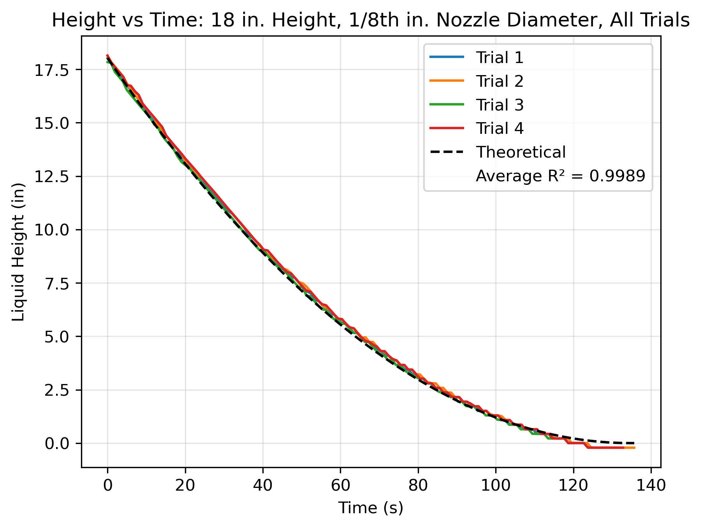
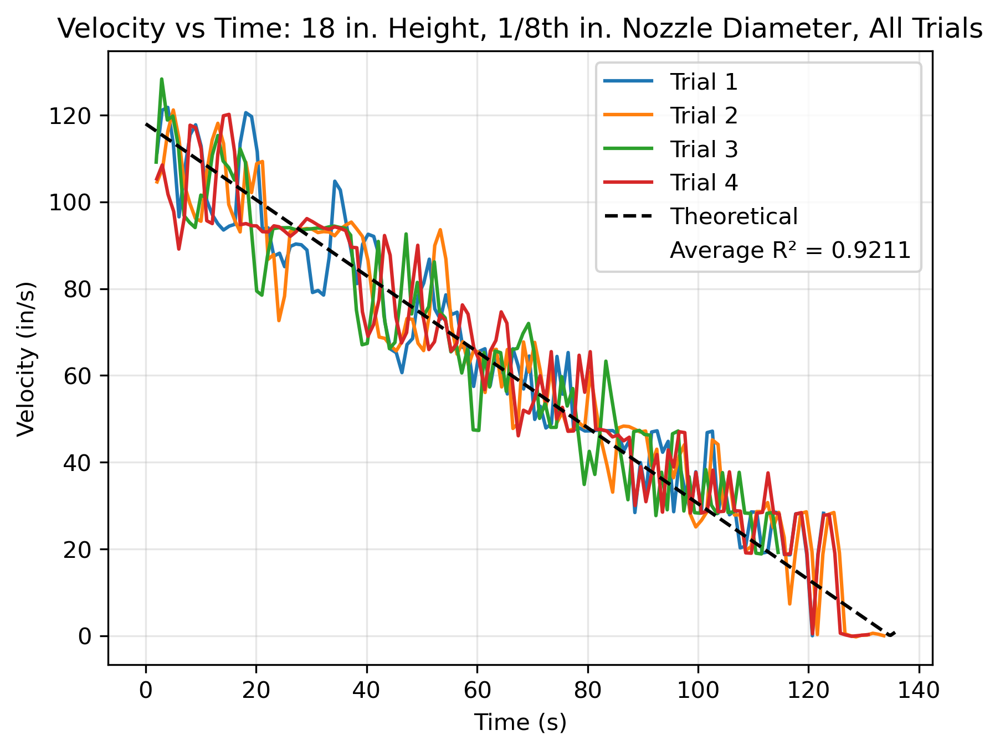
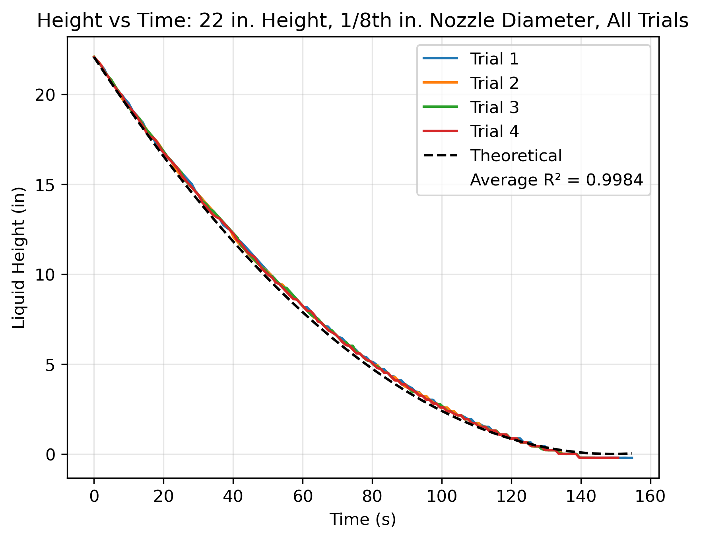
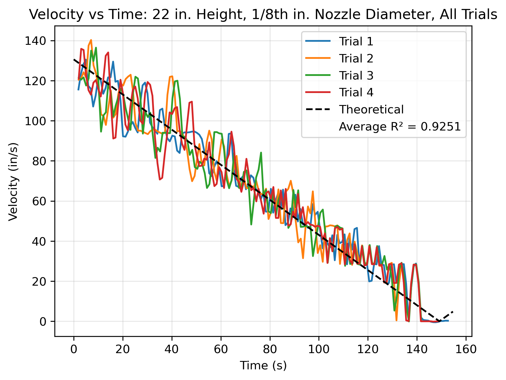
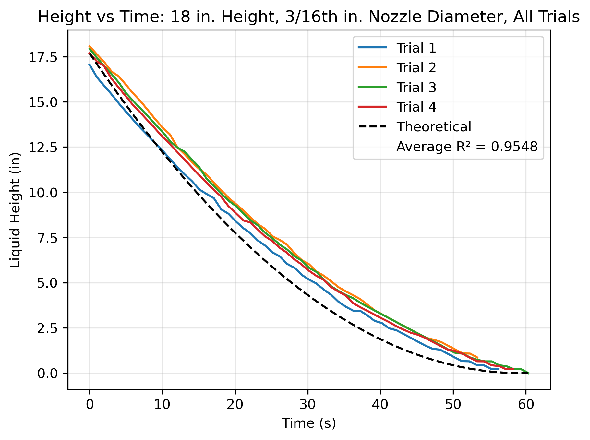
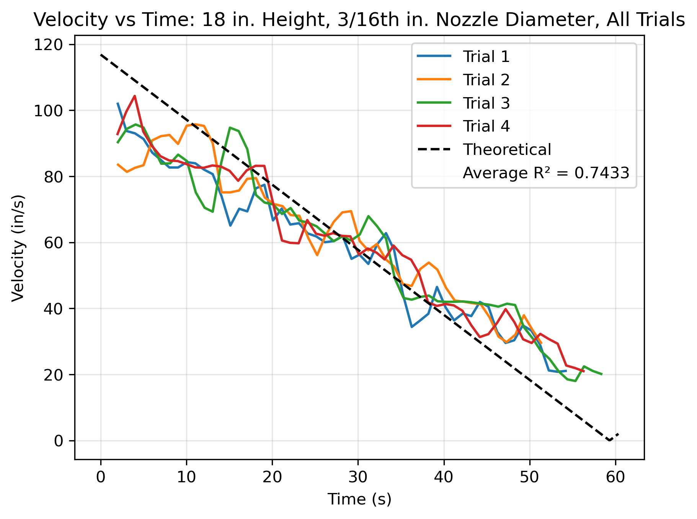
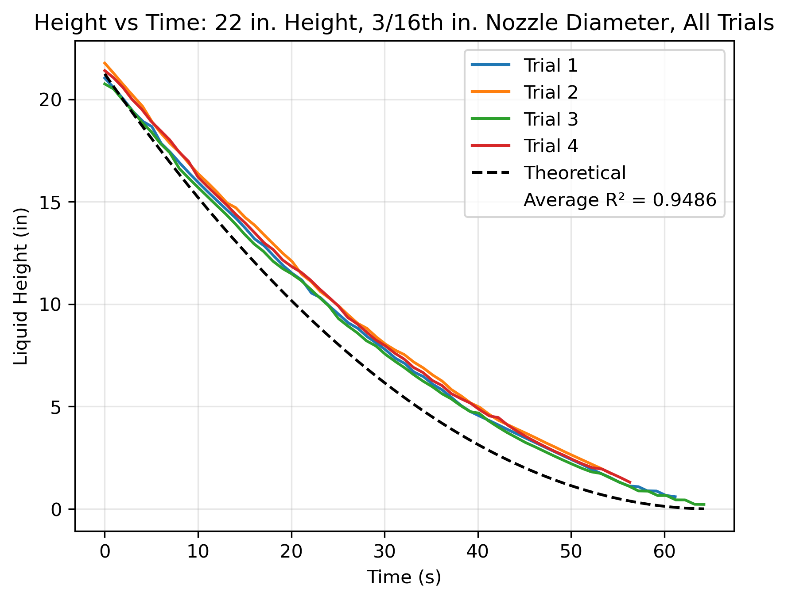
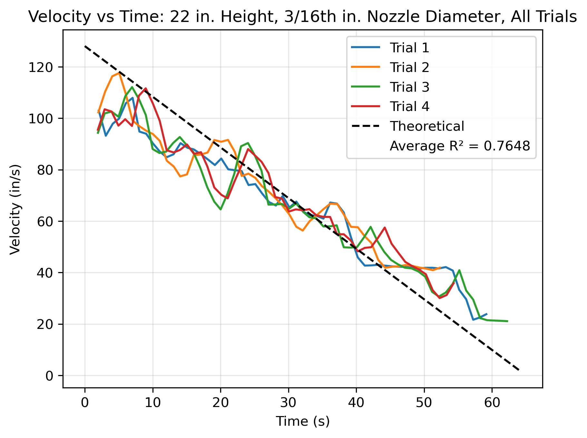
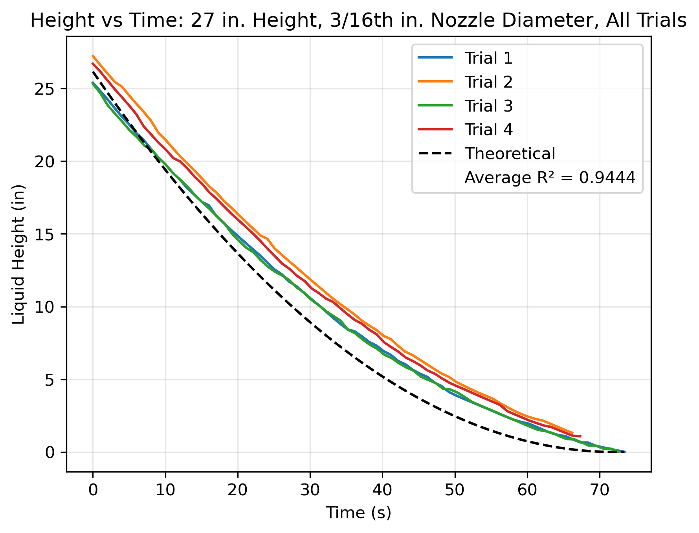
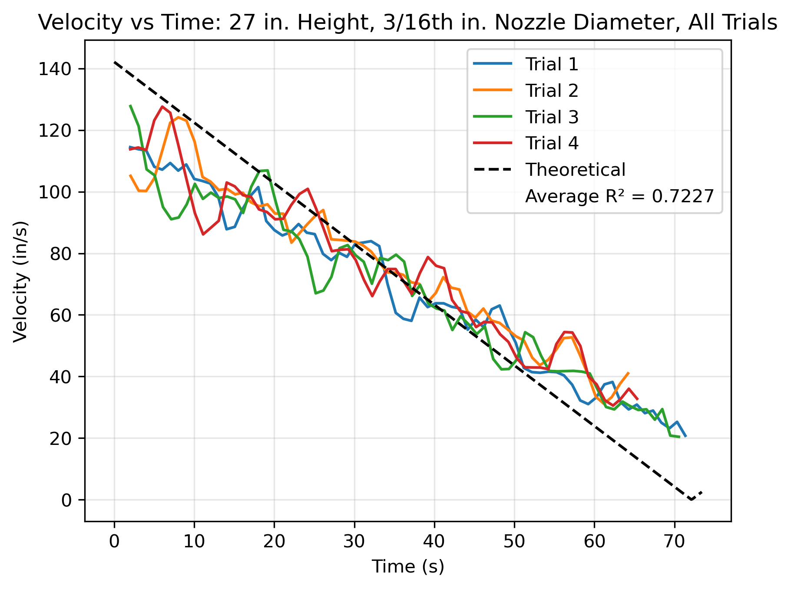

Attachments
Plots, tables and files
Every graph, the summary statistics, the raw data and our analysis notebook.
A Height and velocity plots
Each plot shows all four trials of one suite with the dashed ideal Torricelli curve. Height plots give liquid height (in) against time (s); velocity plots give the exit velocity v₂ (in/s), calculated from a centered 5-point running derivative of h(t) and continuity (Eq. 10). The legend's average R² is calculated for each trial against the theoretical curve (starting from the mean actual start height, and only while t ≤ the theoretical drain time), then averaged over the four trials.
Following our supervisor's recommendation, these continuous time series carry no standard error bars; agreement is quantified by R². Uncertainty in the discrete summary values (drain times) is given as mean ± SD in Table A1 and as error bars in Figure A13. Click any graph to enlarge it.
18 in · 1/8 in




22 in · 1/8 in




27 in · 1/8 in


18 in · 3/16 in




22 in · 3/16 in




27 in · 3/16 in




B Summary tables
| Orifice | h₀ (in) | Theoretical tdrain (s) | Measured tdrain, mean ± SD (s) | % difference |
|---|---|---|---|---|
| 1/8 in | 18 | 134.7 | 118.4 ± 1.3a | −12.1 % |
| 1/8 in | 22 | 149.2 | 134.2 ± 0.5 | −10.1 % |
| 1/8 in | 27 | 165.4 | 149.8 ± 1.3 | −9.4 % |
| 3/16 in | 18 | 59.3 | 57.0 ± 3.0a | −3.9 % |
| 3/16 in | 22 | 64.3 | 61.2 ± 2.5 | −4.8 % |
| 3/16 in | 27 | 73.6 | 69.9 ± 3.7a | −5.0 % |
Measured drain time = first reading at or below 0.1 in; theoretical drain time is to 0 in from the mean actual start height. See the Data page for why the measured times are shorter.
a Includes trials in which logging stopped before the column fully drained (we stopped recording when the column appeared empty, but the logger lagged behind real time), or the reading levelled off above the threshold. The time of the last recorded point was used, so the true mean drain time is slightly longer.
| Suite | R², height | R², velocity |
|---|---|---|
| 18 in, 1/8 in | 0.9989 | 0.9211 |
| 22 in, 1/8 in | 0.9984 | 0.9251 |
| 27 in, 1/8 in | 0.9982 | 0.9420 |
| 18 in, 3/16 in | 0.9548 | 0.7433 |
| 22 in, 3/16 in | 0.9486 | 0.7648 |
| 27 in, 3/16 in | 0.9444 | 0.7227 |
C Data files and analysis script
Raw data: all 24 runs
↓ Download raw_data_all_runs.zip
File format
- Names:
<height in> <orifice> <trial #> <name>.H00. Example:18 1-8 3 Alicia.H00= 18 in initial height, 1/8 in orifice, trial 3.3-16= 3/16 in orifice. The trailing name is an arbitrary label and has no meaning. - Encoding: comma-separated text, UTF-16, with a header row. Open with that encoding (e.g., Excel's Text Import Wizard: Delimited → Comma).
- Columns: Date, Time, Pump_Power, Liquid_Height_Ranging, PID_Input, PID_Setpoint, PID_Output, PID_P, PID_I, PID_D, Liquid_Height_Pressure.
- Time is
HH:MM:SS:cc(last field = hundredths of a second); samples are about 1 s apart. - Liquid_Height_Ranging is the ultrasonic level reading in inches, the measurement used in this experiment. Pump_Power (%) is 0 during draining. The PID columns and Liquid_Height_Pressure were not used.
- 1/8 in runs recorded September 2, 2026; 3/16 in runs recorded September 16, 2026.
Analysis notebook
↓ Download againtoricelli_plotting_rev2.ipynb
Python (pandas, NumPy, matplotlib). Reads the UTF-16 .H00 files, aligns each run's start, computes the centered 5-point running derivative (running_slope), plots all four trials with the theoretical curve (ana_height; g = 386.09 in/s², D₁ = 2.625 in), computes R² against theory (r2_vs_theory) and prints each trial's drain time (first h ≤ 0.1 in).
How to run
- Unzip the raw data and open the notebook in Jupyter (Python 3 with pandas, NumPy and matplotlib).
- The notebook processes one suite at a time. Before each run, edit
folderpath,start_height,radius_nozzleand the plot titles for that suite. folderpathpoints to our original folder layout (e.g.,toricelli data/1:8inchnozzle/27_inch_height), not to the zip. Put the four files of a suite in one folder and pointfolderpathat it.